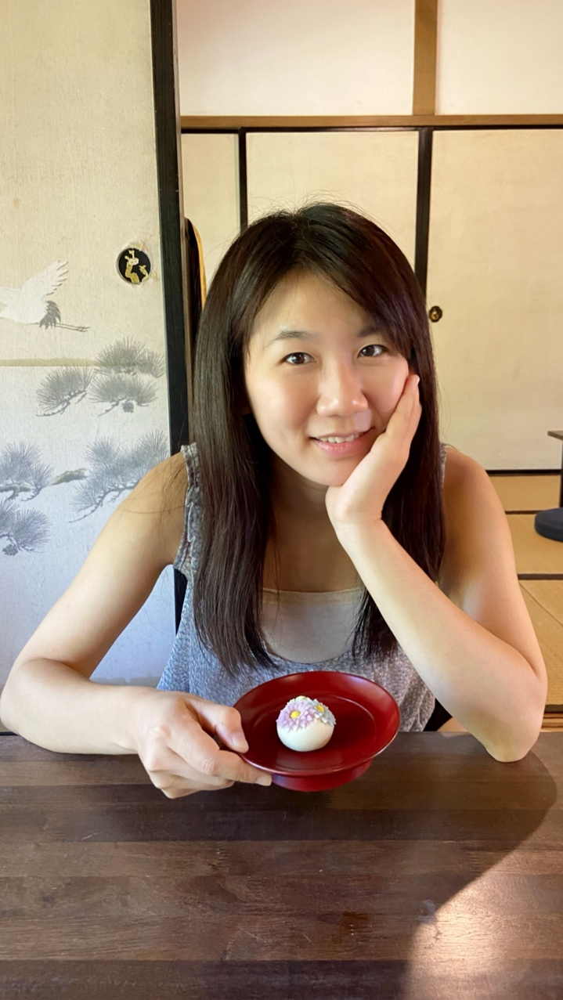

Shih-Fan Chou (周詩梵)
Assistant Professor
Department of Computer Science and Information Engineering
National Taiwan University of Science and Technology, Taipei, Taiwan
Address: RB-309, No. 43, Sec. 4, Keelung Rd., Da’an Dist., Taipei City 106335, Taiwan (R.O.C.)
Tel: 02-27301105
Email: sfchou mail.ntust.edu.tw
mail.ntust.edu.tw